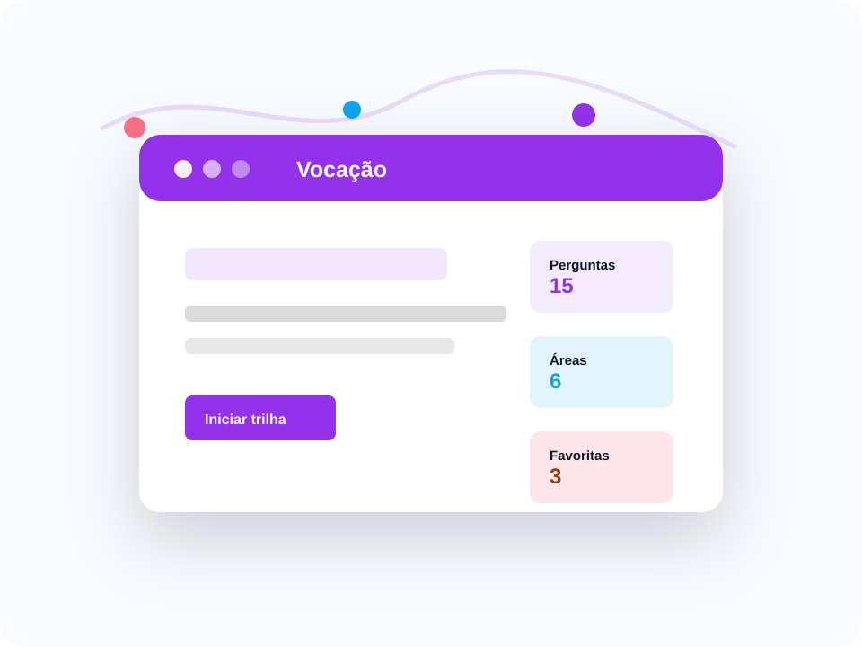

Questionário de interesses
O aluno responde perguntas sobre preferências, rotina e habilidades.
Interesses, habilidades e trilhas profissionais para explorar.
Um site para ajudar estudantes a refletirem sobre vocação profissional por meio de perguntas, áreas de interesse e sugestões de carreiras.

O aluno responde perguntas sobre preferências, rotina e habilidades.
Tecnologia, saúde, gestão, artes e educação aparecem como trilhas de exploração.
Cada profissão vem com descrição simples e próximos passos de pesquisa.
Aluno que gosta de resolver problemas recebe opções ligadas a tecnologia e ciência.
Interesse por pessoas e apresentação gera sugestões em gestão, eventos ou educação.
O site orienta pesquisar rotina, cursos e mercado antes de escolher.
Sugestão fictícia: desenvolvimento web, suporte técnico e redes.
A trilha indica cursos, habilidades e atividades práticas para experimentar.
Interações nesta visita: 0
Para mapear interesses.
Trilhas profissionais.
Carreiras salvas.